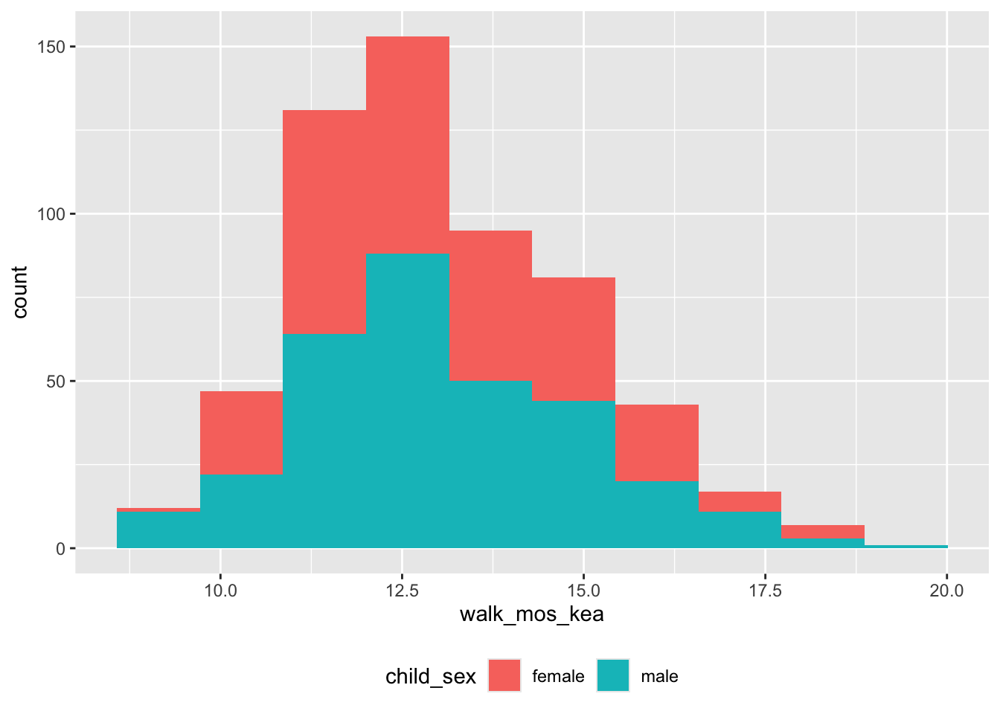
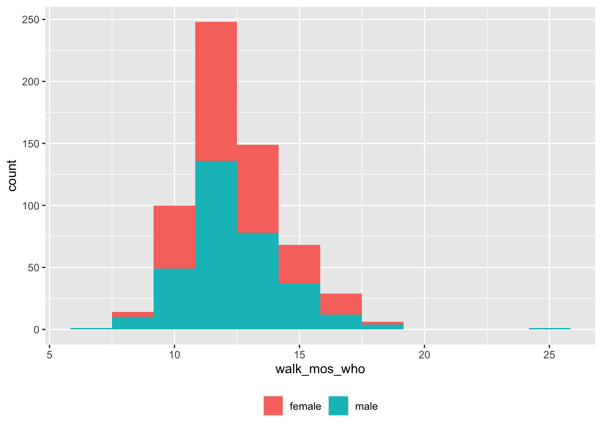
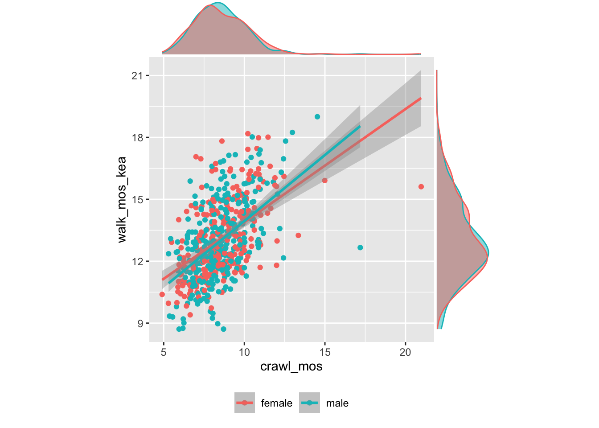
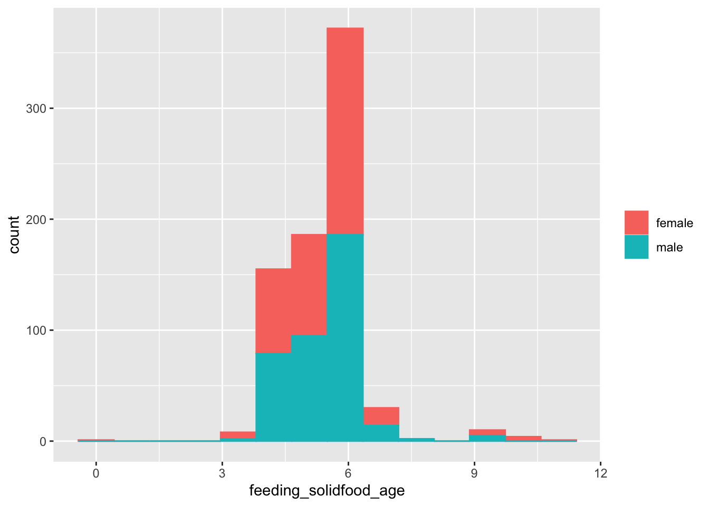

Home visit visualizations
Load home visit data
targets::tar_load(home_visit_df, store="../_targets")Demographics
Child age
Child age in months (age_group) by child_sex.
Note: The child’s exact age in months is part of the Databrary-related data. That is on the work plan.
home_visit_df %>%
dplyr::filter(.,!is.na(age_group),!is.na(child_sex)) %>%
ggplot() +
aes(age_group, fill = child_sex) +
geom_bar() +
theme(legend.position = "bottom") +
theme(legend.title = element_blank())
Figure 4: Participants by age group and sex
Language exposure
df <- home_visit_df %>%
dplyr::mutate(., language_child = stringr::str_replace_all(language_child, " ", "_"))
xtabs(formula = ~ child_sex + language_child, data = df)## language_child
## child_sex english english_spanish
## female 150 31
## male 143 49Locomotor milestones
play_loco <- home_visit_df %>%
dplyr::select(
.,
age_group,
child_sex,
language_child,
site_id,
subject_number,
locomotor_milestones.who_walk.who_walk_onset_mo,
locomotor_milestones.k_walk.k_walk_onset_mo,
locomotor_milestones.crawl_onset.crawl_onset_mo
) %>%
dplyr::rename(
.,
walk_mos_who = locomotor_milestones.who_walk.who_walk_onset_mo,
walk_mos_kea = locomotor_milestones.k_walk.k_walk_onset_mo,
crawl_mos = locomotor_milestones.crawl_onset.crawl_onset_mo
) %>%
dplyr::mutate(
.,
walk_mos_who = as.numeric(walk_mos_who),
walk_mos_kea = as.numeric(walk_mos_kea),
crawl_mos = as.numeric(crawl_mos)
)Check for anomalous values
crawl_mos_min <- 4
walk_mos_min <- 6Anomalous crawling onset
play_loco %>%
dplyr::select(., site_id, subject_number, crawl_mos) %>%
dplyr::filter(., crawl_mos < crawl_mos_min) %>%
knitr::kable(format = 'html') | site_id | subject_number | crawl_mos |
|---|---|---|
| BOSTU | 013 | -5.13 |
| CHOPH | 003 | 3.72 |
| PRINU | 020 | -5.69 |
Crawl onset
play_loco %>%
dplyr::filter(., crawl_mos > crawl_mos_min, !is.na(crawl_mos)) %>%
ggplot(.) +
aes(crawl_mos, fill = child_sex) +
geom_histogram(bins = 12) +
theme(legend.position = "bottom") +
theme(legend.title = element_blank())
Figure 5: Age of crawling onset (mos) by sex
Walk onset
play_loco %>%
dplyr::filter(., walk_mos_kea > walk_mos_min, !is.na(walk_mos_kea)) %>%
ggplot(.) +
aes(walk_mos_kea, fill = child_sex) +
theme(legend.position="bottom") +
geom_histogram(bins = 10)

Figure 6: Age (mos) of walking onset (KEA criteria) by sex
play_loco %>%
dplyr::filter(., walk_mos_who > walk_mos_min, !is.na(walk_mos_who)) %>%
ggplot(.) +
aes(walk_mos_who, fill = child_sex) +
geom_histogram(bins=12) +
theme(legend.position="bottom") +
theme(legend.title = element_blank())

Figure 7: Age (mos) of walking onset (WHO criteria) by sex
play_loco %>%
dplyr::filter(., walk_mos_who > walk_mos_min, !is.na(walk_mos_who), walk_mos_kea > walk_mos_min, !is.na(walk_mos_kea)) %>%
ggplot(.) +
aes(walk_mos_who, walk_mos_kea, color = child_sex) +
geom_point() +
geom_smooth(method = "lm") +
xlim(8, 18) +
ylim(8, 18) +
theme(legend.position = "bottom") +
theme(aspect.ratio = 1) +
theme(legend.title = element_blank()) -> walk_p
ggExtra::ggMarginal(
walk_p,
play_loco,
walk_mos_who,
walk_mos_kea,
type = "density",
margins = "both",
groupColour = TRUE,
groupFill = TRUE
)## `geom_smooth()` using formula = 'y ~ x'## Warning: Removed 5 rows containing non-finite values (`stat_smooth()`).## `geom_smooth()` using formula = 'y ~ x'## Warning: Removed 5 rows containing non-finite values (`stat_smooth()`).## Warning: Removed 5 rows containing missing values (`geom_point()`).
Figure 8: Walking onset by WHO vs. KEA criteria
play_loco %>%
dplyr::filter(., crawl_mos > crawl_mos_min, !is.na(crawl_mos), walk_mos_kea > walk_mos_min, !is.na(walk_mos_kea)) %>%
ggplot(.) +
aes(crawl_mos, walk_mos_kea, color = child_sex) +
geom_point() +
geom_smooth(method = "lm") +
theme(legend.position = "bottom") +
theme(aspect.ratio = 1) +
theme(legend.title = element_blank()) -> walk_p
ggExtra::ggMarginal(
walk_p,
play_loco,
walk_mos_who,
walk_mos_kea,
type = "density",
margins = "both",
groupColour = TRUE,
groupFill = TRUE
)## `geom_smooth()` using formula = 'y ~ x'
## `geom_smooth()` using formula = 'y ~ x'

Figure 9: Walking onset vs. Crawling
Health
Feeding
feeding <- home_visit_df %>%
dplyr::select(
.,
age_group,
child_sex,
site_id,
subject_number,
language_child,
health.feeding_nutrition.breastfeed,
health.feeding_nutrition.solidfood_age
) %>%
dplyr::rename(., breastfeed = health.feeding_nutrition.breastfeed,
solid_food_mos = health.feeding_nutrition.solidfood_age) %>%
dplyr::mutate(., solid_food_mos = as.numeric(solid_food_mos))
xtabs(formula = ~ child_sex + breastfeed, data = feeding)## breastfeed
## child_sex donotknow no refused yes
## female 1 3 0 176
## male 0 12 1 175
feeding %>%
ggplot(.) +
aes(x = solid_food_mos, color = child_sex, fill = child_sex) +
geom_histogram(bins = 15) +
theme(legend.title = element_blank())## Warning: Removed 5 rows containing non-finite values (`stat_bin()`).

Figure 10: Age at introduction of solid foods
Clearly, there are some impossible values here.
feeding |>
dplyr::select(site_id, subject_number, solid_food_mos) %>%
dplyr::filter(., solid_food_mos > 12) %>%
knitr::kable(format = 'html')| site_id | subject_number | solid_food_mos |
|---|---|---|
| NYUNI | 996 | 999 |
Smoking/drinking
smoking_drinking <- home_visit_df %>%
dplyr::select(
.,
age_group,
child_sex,
language_child,
health.smoking.pregnant_smoking,
health.drinking.pregnant_drinking
) %>%
dplyr::rename(., preg_smoking = health.smoking.pregnant_smoking,
preg_drinking = health.drinking.pregnant_drinking)
xtabs(formula = ~ preg_smoking + preg_drinking, smoking_drinking)## preg_drinking
## preg_smoking no refused yes
## donotknow 1 0 0
## no 295 0 69
## refused 0 1 0Sleeping position
sleeping_pos <- home_visit_df %>%
dplyr::select(
.,
age_group,
child_sex,
language_child,
health.general_health.child_sleeping_position
) %>%
dplyr::rename(., child_sleeping_position = health.general_health.child_sleeping_position)
xtabs(formula = ~ child_sleeping_position, data = sleeping_pos)## child_sleeping_position
## back changed donotknow other refused side
## 349 4 1 2 1 3
## stomach_down stomach_side
## 1 7